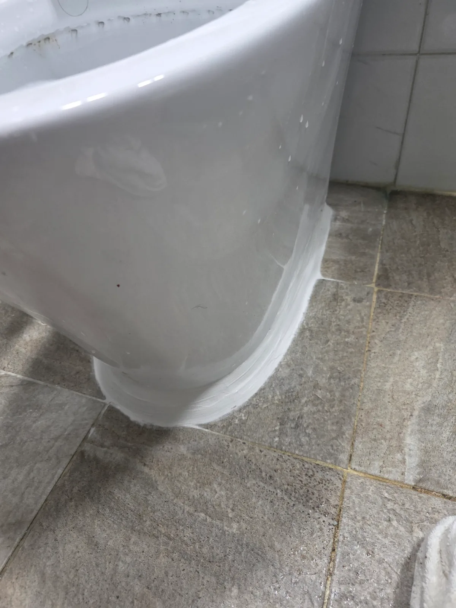

광진구 구의동 변기막힘, 현장 도착 후 진단
신라건축설비는 서울 광진구 구의동 아파트의 변기막힘 현장에서 관통 작업과 석션을 차례로 진행했습니다. 두 방식으로도 막힘이 해소되지 않아 변기를 탈거하고 반대쪽 배출구에서 접근했습니다.
작업 후 꺼낸 이물질을 통해 화장품 뚜껑과 휴지가 함께 걸려 있던 것을 확인했습니다. 단순히 휴지만 막힌 상태가 아니라 단단한 물체가 함께 들어 있어, 이물질을 꺼내는 방향이 중요한 현장이었습니다.
1단계: 증상 확인과 필요한 장비 작업
먼저 관통기를 사용해 변기 내부의 막힌 구간을 밀어보았습니다. 이어 석션 장비로 이물질을 흡입해 꺼내는 작업도 시도했지만 빠지지 않았습니다.
이번 현장에서는 이물질을 평소 물이 내려가는 방향으로 밀었을 때 내부 통로가 좁아지는 구간에서 더 단단히 끼는 현상이 나타났습니다. 같은 방향으로 계속 밀기보다 반대쪽에서 접근해 이물질이 들어왔던 쪽으로 되돌려 빼내는 작업이 필요했습니다.

2단계: 원인 구간 처리와 정상 작동 확인
변기를 바닥에서 탈거한 뒤 뒤집어 아래쪽 배출구가 드러나도록 했습니다. 이후 배출구 쪽에 에어건을 대고 평소 배수 방향과 반대로 순간적인 압력을 가했습니다.
역방향 작업으로 휴지뭉치와 화장품 뚜껑이 함께 나왔습니다. 관통과 석션으로 빠지지 않던 이물질을 탈거 후 접근 방향을 바꿔 제거한 것입니다. 이번 구의동 변기막힘은 힘을 더 주는 것보다 걸린 형태에 맞게 작업 방식을 바꾸는 것이 중요했던 사례입니다.

작업 결과와 재발 방지 안내
변기 내부에 걸려 있던 화장품 뚜껑과 휴지뭉치를 제거했습니다. 신라건축설비는 관통기와 석션 작업의 한계를 확인한 뒤 변기 탈거와 역방향 에어건 작업으로 막힘 원인을 꺼냈습니다.
화장품 뚜껑처럼 작은 물건도 변기 안에 남아 휴지와 뭉치면 배수 통로를 막을 수 있습니다. 뚜껑과 생활용품은 변기 안으로 떨어지지 않도록 보관하고, 물건을 떨어뜨렸다면 물을 내려 보내려 하지 않는 것이 좋습니다.
이물질이 보이지 않거나 배수가 느려졌다면 반복해서 물을 내리지 말고 점검을 받아야 합니다. 작은 물건이라고 그대로 흘려보내기보다 초기에 회수하는 것이 변기막힘을 예방하는 데 도움이 됩니다.
최종 조치: 변기를 탈거하고 뒤집어 아래쪽 배출구에 접근했습니다. 에어건으로 평소 배수 방향과 반대 방향의 순간적인 압력을 가해 화장품 뚜껑과 휴지뭉치를 꺼냈습니다.
현장 방문 전 확인하는 비용과 작업 범위
신라건축설비는 현장 증상과 배관 구조를 확인한 뒤 필요한 작업과 예상 비용을 안내합니다. 단순 관통으로 해결되는지, 배관내시경·석션·고압세척 또는 변기 탈거가 필요한지는 현장 상태에 따라 달라집니다. 출장비와 야간 작업비, 추가 장비 비용이 발생할 수 있는 경우 작업 전에 먼저 설명하고 동의를 받은 범위에서 진행합니다.
업체를 선택할 때 확인할 사항
무조건적인 ‘0원’ 표현보다 실제 작업 범위, 추가 비용 조건, 사용 장비와 사후 대응 기준을 확인하는 것이 중요합니다. 해결되지 않았을 때의 비용 기준과 작업 후 동일 증상 발생 시 점검 범위를 사전에 문의해두면 불필요한 분쟁을 줄일 수 있습니다.
광진구 변기막힘 자주 묻는 질문
변기막힘은 왜 반복되나요?
광진구 구의동 현장처럼 변기가 막혀 배수가 원활하지 않았으며, 관통기로 밀어보고 석션으로 흡입해도 막힘이 해소되지 않았습니다. 증상은 원인이 현장마다 다를 수 있습니다. 변기 내부 이물질뿐 아니라 하부 오수관 막힘이나 배관 상태 때문에 반복될 수 있습니다. 같은 변기막힘이 재발하면 막힌 위치와 원인을 다시 확인하는 것이 중요합니다.
변기 물이 안 내려가거나 역류하면 변기뚫는업체를 불러야 하나요?
물이 천천히 내려가거나 수위가 차오르고 변기역류가 반복되면 단순 뚫어뻥보다 전문 장비 점검이 필요한 경우가 있습니다. 현장에서는 증상과 배관 구조를 먼저 확인합니다.
변기 이물질 막힘은 변기를 탈거해야 하나요?
물티슈·청소포·플라스틱·음식물처럼 변기 트랩에 걸린 이물질은 위치에 따라 변기 탈거가 필요할 수 있습니다. 무조건 탈거하지 않고 먼저 막힘 위치를 판단합니다.
변기뚫는업체는 어떤 장비로 작업하나요?
현장 상태에 따라 석션, 에어건, 배관내시경, 변기 탈거 등을 사용합니다. 하부 오수관 문제라면 변기만 뚫는 작업보다 배관 구간 확인이 중요합니다.
변기막힘 비용은 어떻게 정해지나요?
단순 관통인지, 이물질 제거와 변기 탈거가 필요한지, 오수관이나 공용배관 작업이 필요한지에 따라 달라집니다. 추가 장비나 작업이 필요하면 진행 전에 범위와 비용을 안내합니다.
변기에서 냄새가 나거나 물이 자주 차오르는 것도 막힘과 관련 있나요?
악취나 수위 이상이 항상 막힘 때문인 것은 아니지만 배수 불량, 오수관 상태, 연결부 문제와 함께 나타날 수 있습니다. 반복되면 현장 점검으로 원인을 구분해야 합니다.
변기막힘 서울·경기 출동지역
신라건축설비는 광진구 구의동 현장을 포함해 서울 25개 구와 경기도 31개 시·군의 배관 문제를 상담합니다. 현장 거리와 기사 배정 상황에 따라 출동 가능 여부를 먼저 안내드립니다.
서울 전 지역
강남구 · 강동구 · 강북구 · 강서구 · 관악구 · 광진구 · 구로구 · 금천구 · 노원구 · 도봉구 · 동대문구 · 동작구 · 마포구 · 서대문구 · 서초구 · 성동구 · 성북구 · 송파구 · 양천구 · 영등포구 · 용산구 · 은평구 · 종로구 · 중구 · 중랑구
경기도 주요 출동지역
수원시 · 용인시 · 고양시 · 화성시 · 성남시 · 부천시 · 남양주시 · 안산시 · 평택시 · 안양시 · 시흥시 · 파주시 · 김포시 · 의정부시 · 광주시 · 하남시 · 광명시 · 군포시 · 양주시 · 오산시 · 이천시 · 안성시 · 구리시 · 의왕시 · 포천시 · 양평군 · 여주시 · 동두천시 · 과천시 · 가평군 · 연천군